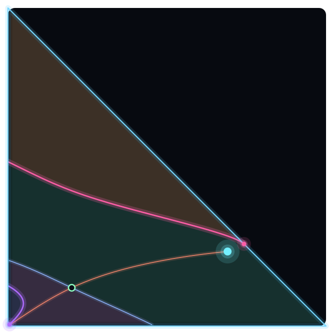

What I work on
Research

I study the viability of living systems — the physiological limits that separate life from death, and how an agent's behavior and metabolism unfold inside them. I pursue this along two tracks that inform each other: extrinsic and intrinsic viability.
Extrinsic viability: viability space decomposition
When a model treats an agent's existence as a built-in assumption, the possibility of death has to be added as an explicit constraint — a life–death boundary the dynamics must respect. These systems are strongly nonlinear, and the usual furniture of dynamical systems theory (attractors and their separatrices) is not enough, because a transient excursion alone can be fatal.
Viability space decomposition is a framework for analyzing ordinary differential equation models that carry such constraints. It derives new global manifolds — mortality, ordering, and collapse — that, together with the classical invariant sets, partition state space into regions of qualitatively similar survival outcomes: a viability portrait. The key move is to treat the agent's essential variables, its behavior, and its environment as one coupled dynamical system.
The figure above analyzes one worked example from the paper: two molecular species \([M_1]\) and \([M_2]\) that catalyze each other's synthesis \(S\) and decay \(D\). The cell is alive only inside a triangular viability region — each concentration must stay above a floor and their sum below an osmotic ceiling. Trajectories that survive converge to the viable attractor; others strike one of the three constraints and die. The mortality and ordering manifolds are precisely the boundaries that classical phase-portrait analysis alone would miss.
Intrinsic viability
Real organisms aren't handed their limits by an outside observer; their constraints are generated from within, by the network of processes that continually rebuild them. Building on Randall Beer's analysis of autopoiesis in Conway's Game of Life, I work on deriving an emergent individual's viability constraint from first principles — for example, the self-maintenance conditions of a glider — and on generalizing that to other cellular automata.
Methods & tools
The work combines numerical integration, continuation, and bifurcation analysis in Python and Mathematica, with reproducible code and data wherever possible. Current threads include characterizing new bifurcations in this setting, extending the theory to higher dimensions, and adding spatial structure between agents.